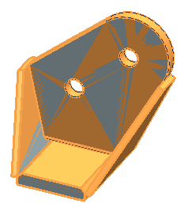

Examine the original and linked components
After using the WAVE command, you have the four original assembly components, plus four WAVE linked bodies that are copies of these components.
The assembly components are listed in the Assembly Navigator, and the WAVE linked bodies are listed in the Part Navigator.
 Assembly Navigator
Assembly Navigator
-
 wb_001
wb_001 -
Shift
+
wb_004All four assembly components are selected.
In the graphics window, the WAVE bodies appear to bleed through the display of the selected assembly components.

-
the Assembly Navigator window to deselect everything
 Part Navigator
Part Navigator
-
Linked Body (4)
-
Shift
+
Linked Body (7)All four WAVE linked bodies are selected.
In the graphics window, the assembly components appear to bleed through the display of the selected WAVE bodies.